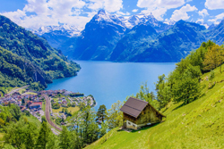
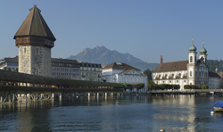
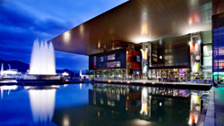
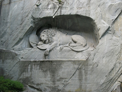
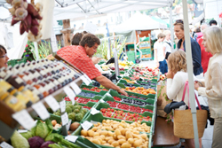
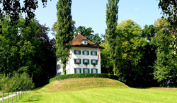

Click in any field below to hear the sentence read aloud.
Click in any field below to reveal a translation.
Luzern ist eine malerische Stadt in der Schweiz und liegt im gleichnamigen Kanton Luzern. Die Stadt liegt am Ufer des Vierwaldstättersees und wird von den beeindruckenden Schweizer Alpen umgeben. Mit ihrer reichen Geschichte, ihrer atemberaubenden Landschaft und ihrem kulturellen Erbe ist Luzern ein beliebtes Reiseziel für Touristen aus aller Welt.
Lucerne is a picturesque city in Switzerland, located in the canton of the same name, Lucerne. The city lies on the shores of Lake Lucerne and is surrounded by the impressive Swiss Alps. With its rich history, breathtaking scenery and cultural heritage, Lucerne is a popular destination for tourists from all over the world.
| Luzern liegt im Zentrum der Schweiz und ist von einer beeindruckenden natürlichen Umgebung umgeben. Der Vierwaldstättersee, auch bekannt als der “Schweizer See der vier Kantone”, erstreckt sich vor den Toren der Stadt. Dieser malerische See bietet eine atemberaubende Kulisse mit klarem, türkisfarbenem Wasser und umliegenden Bergen. |  |
Lucerne is located in the center of Switzerland and is surrounded by impressive natural surroundings. Lake Lucerne, also known as the "Swiss Lake of the Four Cantons", stretches just outside the city gates. This picturesque lake offers a breathtaking backdrop of clear, turquoise water and surrounding mountains.
| Die Stadt selbst ist von Hügeln umgeben, die einen spektakulären Blick auf den See und die umliegende Landschaft bieten. Aufgrund dieser geografischen Lage ist Luzern ein idealer Ausgangspunkt für Outdoor-Aktivitäten wie Wandern, Radfahren und Wassersport. |
The town itself is surrounded by hills that offer spectacular views of the lake and the surrounding countryside. Due to this geographical location, Lucerne is an ideal starting point for outdoor activities such as hiking, cycling and water sports.
| Geschichte und Kultur Luzern hat eine lange Geschichte, die bis ins Mittelalter zurückreicht. Die Altstadt von Luzern ist gut erhalten und beherbergt viele historische Gebäude, darunter die berühmte Kapellbrücke. Diese Brücke aus dem 14. Jahrhundert ist eines der Wahrzeichen der Stadt und ein beliebtes Fotomotiv für Besucher. |
 |
History and culture
Lucerne has a long history that dates back to the Middle Ages. Lucerne's old town is well preserved and is home to many historic buildings, including the famous Chapel Bridge. This 14th-century bridge is one of the city's landmarks and a popular photo opportunity for visitors.
Lucerne has a long history that dates back to the Middle Ages. Lucerne's old town is well preserved and is home to many historic buildings, including the famous Chapel Bridge. This 14th-century bridge is one of the city's landmarks and a popular photo opportunity for visitors.
| Die Stadt war ein wichtiger Handelsplatz im Mittelalter und spielte auch eine bedeutende Rolle während der Reformation. Die kulturelle Vielfalt von Luzern spiegelt sich in den zahlreichen Museen, Galerien und kulturellen Veranstaltungen wider, die das ganze Jahr über stattfinden. Das Kultur- und Kongresszentrum Luzern ist ein renommiertes Veranstaltungszentrum und zieht regelmäßig internationale Künstler und Musiker an. |  |
The city was an important trading center in the Middle Ages and also played an important role during the Reformation. The cultural diversity of Lucerne is reflected in the numerous museums, galleries and cultural events that take place all year round. The Lucerne Culture and Congress Center is a renowned event center and regularly attracts international artists and musicians.
| Sehenswürdigkeiten und Aktivitäten Luzern bietet eine Vielzahl von Sehenswürdigkeiten und Aktivitäten für Besucher. Neben der Kapellbrücke können Besucher auch das Löwendenkmal besichtigen, eine beeindruckende Skulptur eines sterbenden Löwen, die den Schweizer Soldaten gewidmet ist, die während der Französischen Revolution ihr Leben verloren haben. |
 |
Attractions and activities
Lucerne offers a variety of attractions and activities for visitors. In addition to the Chapel Bridge, visitors can also view the Lion Monument, an impressive sculpture of a dying lion dedicated to the Swiss soldiers who lost their lives during the French Revolution.
Lucerne offers a variety of attractions and activities for visitors. In addition to the Chapel Bridge, visitors can also view the Lion Monument, an impressive sculpture of a dying lion dedicated to the Swiss soldiers who lost their lives during the French Revolution.
| Die Altstadt von Luzern lädt zum Bummeln ein und bietet eine Fülle von Geschäften, Restaurants und Cafés. Der Wochenmarkt auf dem Rathausplatz ist ein beliebter Treffpunkt für Einheimische und Touristen gleichermaßen. |  |
The old town of Lucerne invites you to stroll and offers a wealth of shops, restaurants and cafés. The weekly market on the town hall square is a popular meeting place for locals and tourists alike.
| Für Kunstliebhaber gibt es das Richard Wagner Museum, das dem deutschen Komponisten gewidmet ist, sowie das Rosengart Museum mit einer beeindruckenden Sammlung von Werken des Malers Pablo Picasso. |  |
For art lovers, there is the Richard Wagner Museum, dedicated to the German composer, as well as the Rosengart Museum with an impressive collection of works by the painter Pablo Picasso.